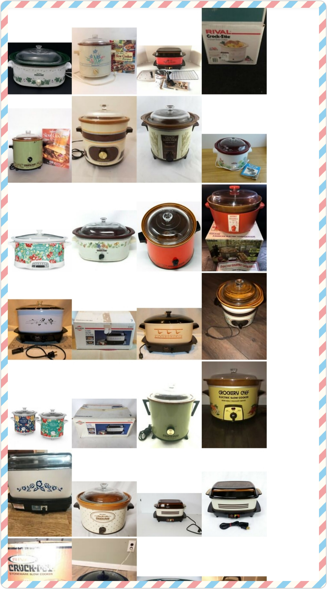
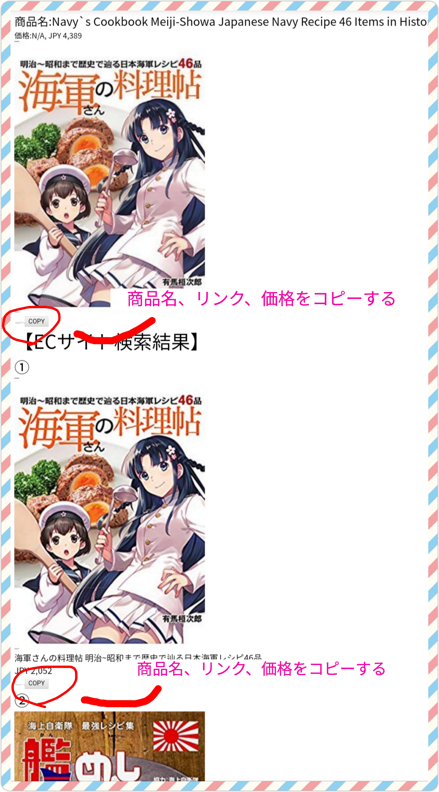

HTMLの利用方法
MacやWindowsであれば、ブラウザに生成されたHTMLをドラッグ＆ドロップすれば見ることができます。私はAndroidのDocumentフォルダなどへコピーしておいて、外出先や移動中などにChromeで確認しています。その他の環境での方法は調べてみて下さい。
まず始めに商品画像だけの一覧が出てきます。これらはeBayでキーワードを指定して調べた商品画像です。画像をクリックするとジャンプします。そこには商品名、商品画像、価格、及びamazonでの類似画像検索結果があります。

COPYボタンを押すと、商品名、URL、価格がクリップボードにコピーされます。その際、各項目の区切り文字をカンマやスペース、タブなどにしておくこともできますので、ご相談下さい。例えばタブで区切っておくとGoogleスプレッドシートにペーストすれば、各項目を簡単にセルに貼り付けることができます。
amazonの類似画像がまったく見つかっていない場合、商品画像を右クリックもしくは長押しするとgoogle画像検索ができます(Chrome使用している場合のみ)ので、それでamazon以外のサイトで販売していないかどうかなど調べてみることができます。
